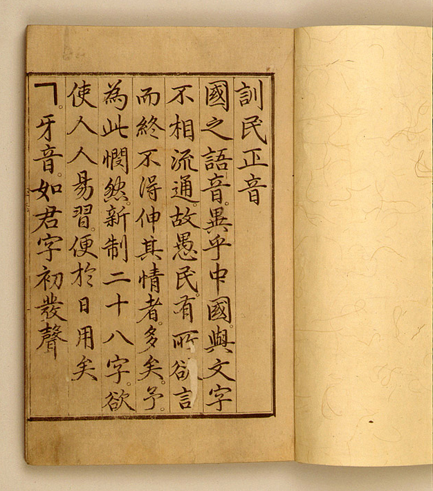
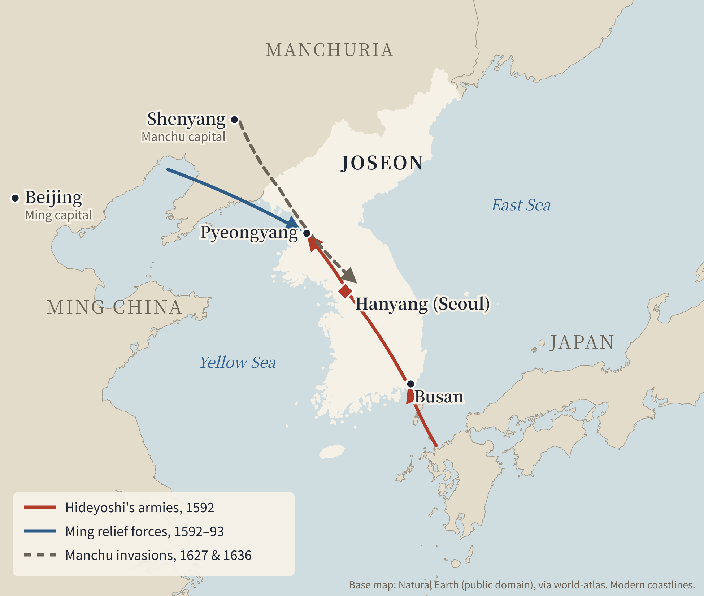
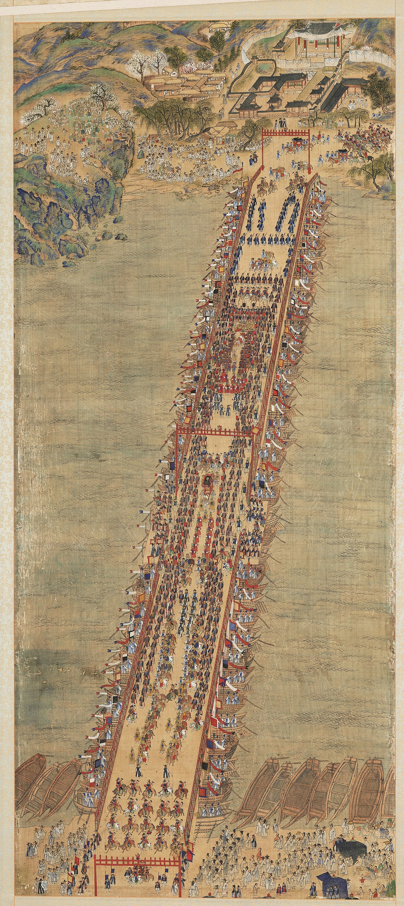
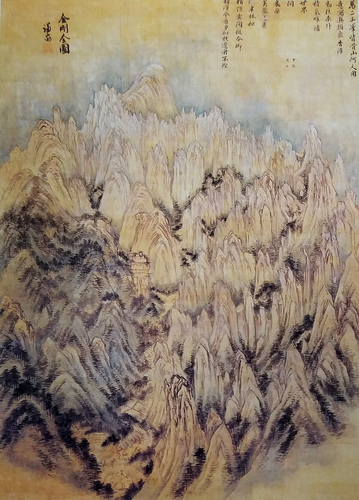

Unit 1 · Study guide
Joseon Korea 조선
The Confucian state, 1392–1800
Contents
The chapter in one paragraph
The Joseon (JOE-son) dynasty ruled Korea from 1392 to 1910; this unit covers it up to 1800. The textbook frames the period as one of "extensive Confucianization": Korea copied Chinese statecraft and the examination system more closely, the hereditary yangban elite had to devote itself to education to win office, and Confucian norms reached into family life, so that women largely lost the right to inherit. The dynasty survived invasions by the Japanese and the Manchus, and by the 1700s showed economic growth, social change, and new cultural openness. p. 247
Given its flawed government and many crises, why did the dynasty last so long?
Questions historians ask p. 247
Politics
- Why was factionalism so bitter and bloody?
- Did officials' power save Korea from tyranny, or weaken it?
The world
- Did Joseon benefit from ties with Ming China?
- Why couldn't it repel Hideyoshi?
- How did it respond to Christianity?
Society
- Why did commerce lag behind China and Japan?
- Why was so much labor unfree?
Dotted-underlined words are defined in Key terms: hover or tap to see the definition. Page numbers refer to the textbook. Pronunciations follow the textbook: Joseon (JOE-son), yangban (YANG-bahn), Sejong (SAY-jong), Goryeo (GO-riyo).
Key terms first
Ordered so each term only relies on terms above it. "Builds on" shows what to know first.
- Classical Chinese
- The written language of educated East Asians, unrelated to the Korean that people spoke. Yangban boys had to learn thousands of Chinese characters to take the exams. p. 252
- Filial piety
- Reverence for parents; a key Confucian virtue, expressed through rites honoring ancestors. p. 304
- Confucianism
- The tradition based on the Chinese classics, stressing virtues such as filial piety and loyalty to the ruler. Joseon kings found that stress useful for winning conformity to their authority. p. 250Builds on: classical Chinese, filial piety
- Zhu Xi 1130–1200
- Song-dynasty Chinese philosopher. His commentaries on the Confucian classics became required reading for China's civil service exams, and he set out rules and rites for family life. p. 304
- Principle i (Korean) · li (Chinese)
- An invisible underlying pattern that makes each thing what it is and links all things. pp. 251, 304
- Psychophysical force ki (Korean) · qi (Chinese)
- What gives things their physical form and makes them different from each other; also translated "ether," "physical force," or "matter." For Zhu Xi, neither principle nor force could exist without the other. pp. 251, 304
- Neo-Confucianism
- A philosophical system, developed in Song China, that sought one unifying explanation of the universe, the physical world, and human nature, using principle and psychophysical force. Joseon yangban used it to oppose Buddhism and to order social relations. p. 304Builds on: Confucianism, Zhu Xi, principle, psychophysical force
- Orthodoxy / heterodox
- Orthodoxy: the officially approved version of a teaching (in Joseon, Zhu Xi's). Heterodox: a teaching condemned as straying from it, as Yi Toegye condemned Wang Yangming. p. 251Builds on: Neo-Confucianism
- Civil service examinations
- Exams on the Confucian classics used to pick men with literary educations to run the government. In early Joseon they became the main route to high office: birth alone was no longer enough. pp. 250, 252Builds on: classical Chinese, Confucianism
- Remonstrance
- Officials' formal criticism of the king's decisions. With "obstruction and remonstrance," Joseon officials limited kings' theoretically absolute power. p. 250
- Faction · purge
- A faction is a group of officials bound by personal ties (family, marriage, school, teacher) competing for power. A purge is the removal, exile, or execution of a rival faction's members. Permanent factions began in 1575. p. 252
- Corvée
- Labor owed to the state as a form of tax. Early Joseon taxes were paid in kind (goods) or by physical labor; King Taejong called up 100,000 corvée laborers to build the capital. pp. 248, 257
- Ever-normal granaries
- A Chinese system adopted by King Sejo: the state bought grain when cheap and sold it when dear, to keep prices stable. p. 249
- Tributary system
- China's way of handling foreign relations: rulers of countries such as Korea, Ryukyu, and Vietnam sent envoys to the emperor's court. In return, the emperor had a moral obligation to defend loyal tributaries, which is why the Ming sent troops in 1592. p. 254; Ch. 16
- Yangban YANG-bahn
- Korea's hereditary aristocrats, who kept a near monopoly on high office throughout Joseon. Over time they split into a national office-holding elite and rural yangban with no hope of office. pp. 250–251Builds on: civil service examinations
- Concubine · seoeol
- A concubine was a man's secondary partner, ranked below his primary wife. Sons of concubines (seoeol) were barred from the civil service exams. pp. 250, 304, 363
- Hyangni HYANG-ni
- Clerks in local administration. The yangban banned their promotion into the central bureaucracy. p. 250
- Jungin JOONG-in · "middle people"
- A new hereditary class of clerks, legal specialists, accountants, interpreters, and similar technical experts who could not rise to regular office but kept these posts for their own families. p. 251Builds on: yangban
- Patrilineal · matrilineal
- Patrilineal: kinship and property traced through the father's line. Matrilineal: through the mother's line. Goryeo traced kinship through both; Joseon became more patrilineal. pp. 261, 264
- Mudang
- Shamans, usually women, hired to contact the spirits of dead parents and other spirits. p. 262
- Wakō
- Japanese pirates who raided the Korean coast; Sejong defeated them on Tsushima Island. p. 248
- Jurchens · Manchus
- Tribal peoples of Manchuria, north of Korea. In the 1590s Nurhaci united the Jurchens and renamed them Manchus; they founded the Qing dynasty and conquered China in 1644. p. 254
- Hangul HAN-gul
- The Korean alphabet invented under King Sejong in 1443, "the first and only one of its kind in East Asia." It let people who knew no Chinese, including women, read and write. pp. 248, 262Builds on: classical Chinese
- Sijo · gasa SHE-joe · GA-sa
- Korean poetic forms: the short sijo, its longer version (saseol sijo), and the still longer lyrical gasa. They used alliteration and cadence, not rhyme. pp. 258–259
- Pansori PAN-sori
- A sung chant performed with a drummer, which spread in the countryside in the 1700s; many songs mocked the yangban. p. 260
- Northern Learning
- An 18th-century reform school urging Korea to drop its prejudice against the Manchus and learn from Qing China to improve the economy. p. 260Builds on: Manchus
- Western Learning
- Koreans' term for European ideas that arrived through Chinese-language books, lumping Catholic theology together with Western science. p. 260
From Goryeo to Joseon
pp. 247–248 · Background before 1600
After a period of Mongol domination, the Goryeo (GO-riyo) dynasty revived in the mid-1300s. King Gongmin strengthened the military, expanded tax revenue, and promoted Confucianism. After his assassination, Confucian reformers allied with General Yi Seonggye (E SUNG-geh), who became the power behind the throne. Reforms reclaimed land grants, cancelled tax exemptions for favored yangban, and carried out a national land survey.
The founding was "in essence a coup from within": relatively bloodless, and most great Goryeo families survived to lead in Joseon. p. 248
Geography
- Capital: Hanyang (Seoul), built by King Taejong with corvée labor.
- North: Sejong pushed the border to the Yalu and Tumen rivers, sending thousands of southern Koreans to settle lands held by Jurchens.
- Local rule: for the first time, magistrates in all ~300 districts were appointed by the central government.
- Watch for later: Busan and Tongnae (1592 landing; Japanese trade enclave after 1609), Pyeongyang, Hwaseong (Suwon), Tsushima.
pp. 248, 250 · Textbook map: Map 15.1, p. 250

Three strong early kings
pp. 248–249
Taejong
- Built Hanyang with corvée labor
- Strengthened the armed forces
- Seized Buddhist temple lands
- Created a sound fiscal base
Sejong r. 1418–1450
- Defeated Wakō pirates on Tsushima
- Northern border to Yalu & Tumen
- Banned cruel punishments; appeals in death cases
- Hall of Worthies (1420); hangul (1443)
- Sundials, water clock, rain gauge (1442)
Sejo r. 1455–1468
- Took the throne from his 12-year-old nephew
- Five Guards Command (1466)
- Ever-normal granaries
- Ordered the law code, Grand Institutes for Governing the State
- Patronized Buddhism; abolished the Hall of Worthies
Sejong's rain gauge came two centuries before Europe's first. Sejo's bypassing of the state council and his favor to Buddhism tarnished his reputation and helped Confucian officials regain power later. pp. 248–249
Hangul: an alphabet for everyone (1443)

Sejong had the Hall of Worthies create an alphabet to spread learning beyond the elite. The yangban saw it would break their hold on knowledge and opposed it. p. 248
Why it matters: hangul made a vernacular literature possible, readable by people who knew no Chinese, including women. Women wrote poetry in hangul, and Lady Hyegyeong wrote her memoirs in it. As with Japan's kana, women predominated among early users. pp. 258–259, 262, 264
Letters stack into syllable blocks. The demo builds 한, the first syllable of "hangul." The textbook's Figure 15.1 shows the full chart.
Kings, officials, and the social order
pp. 249–252, 257
Early Joseon saw three trends that seem to clash: kings extended central control; committed Neo-Confucians limited the power of the king, military men, and aristocrats; and the yangban kept their dominance. p. 249
The exams opened office, but yangban kept the advantage
- Most officials still came from old yangban families, who could best afford education.
- Yangban barred hyangni from promotion and barred sons of concubines from the exams.
- Material culture: yangban boys played dice "promotion games" in which a player could be promoted, cashiered, or poisoned, learning both the offices and the role of chance. p. 252
Officials versus kings
Officials, mostly from families older and more prestigious than the royal Yi clan, checked kings through remonstrance.
- Yeonsangun purged literati in 1504, cancelled the royal lectures, and was deposed in 1506.
- Jo Gwangjo, a censor under King Jungjong, pushed a "recommendation" exam (1515) that his friends passed; in 1519 the king purged the censors and executed him. Students saw a martyr; he can also be seen as a politician "playing the moral card." pp. 250–251
A layered, hereditary society
pp. 250–251, 257 · Simplified: the textbook does not present these groups as a formal pyramid.
Which comes first: principle or force?
pp. 250–251, 304
By the late 1500s, scholars famous for virtue held high office and debated the metaphysics of Zhu Xi.
Psychophysical force comes first, because without it the mind would not exist at all.
- Wang Yangming, Zhu Xi's main challenger in China, said everyone can find moral truth by looking within. Toegye condemned him as heterodox; that set the tone for the rest of the dynasty, and Wang's admirers kept quiet.
- Korean Confucians respected Ming China but did not see Confucian civilization as uniquely Chinese. The most zealous wanted Korea to follow the classics more closely than the Ming did. p. 250
- By the 1700s, positions in the principle–force debate lined up with factions and were used to justify purges. p. 304
Factions become hereditary
pp. 252–256
Personal ties always shaped politics, but no permanent factions existed until 1575, when two men competed for a key post in the Ministry of Personnel. The sides were named for where members lived in the capital, not for regions. Officials defended factions as moral men banding together against the immoral. pp. 252–253
*The textbook names Northerners and Southerners without explaining their origin. The split (moderates vs. hardliners over punishing Westerner leader Jeong Cheol after the 1589 purge) comes from the Encyclopedia of Korean Culture, entries "Namin" and "Bugin." See Sources.
King Seonjo (r. 1567–1608) disliked factions but kept switching favor. In 1589 he executed more than 70 Easterner officials. In 1591 he rejected a Westerner envoy's warning that Hideyoshi was preparing to invade, and did nothing to prepare. pp. 253–254
Hideyoshi invades, 1592–1598
pp. 251–254
Why was Korea unprepared?
Hollow army
Yangban and rich commoners bribed clerks to be listed as exempt students; commanders let men off duty for bribes or cloth tax. In 1582 Yi Yulgok proposed a 100,000-man army; the court did nothing, leaving three walled towns (Busan, Tongnae, Kimhae) as the defense.
Factions
Seonjo ignored the 1591 warning because it came from a Westerner.
Japan's experience
Near-constant civil war since the Ōnin War (1467) gave Hideyoshi samurai and foot soldiers with muskets and cannon.

The one bright spot: Admiral Yi Sunsin
Admiral Yi Sunsin's (E SOON-shin) navy won repeated victories. His command ship was shaped like a turtle with a dragon's head:
- Iron cladding, unprecedented at the time
- Iron spikes hidden under straw mats to stop boarders
- Ten oars a side to escape pursuit
- Cannon (6 ports below, 22 above, each side) firing shells of gunpowder and iron splinters
The record that Yi's 12 ships destroyed 400 in one month is, in the textbook's words, "undoubtedly exaggerated." p. 254

Caught between Ming and Manchu
pp. 253–255
| Year | What happened |
|---|---|
| 1590s | Nurhaci unites the Jurchens and renames them Manchus. |
| to 1623 | King Gwanghaegun, a concubine's son, tries to stay neutral; with Great Northerner support he has rival prince Yeongchang killed. |
| 1623 | Westerner coup puts Injo on the throne, purges the Northerners (out of high office for two centuries), and backs the Ming. |
| 1627 | 30,000 Manchus invade and impose a treaty. |
| 1636 | 120,000 Manchus invade; beacons fail, so Injo learns only two days before they reach Hanyang. Joseon breaks with the Ming and becomes a Qing tributary. |
| 1644 | Manchus conquer China. Most yangban despise them and stay loyal to the Ming's memory. |
Like the Mongols, the Manchus did not see Korea as much of a prize. They wanted tribute for their campaigns, then had too much territory to run, and Joseon proved a nonthreatening vassal. p. 255
Biography: Jeong Myeongsu, the interpreter p. 253
Like the jungin, he rose through a specialist skill rather than birth.
Palace politics, 1659–1800
pp. 255–259
- 1659 mourning dispute: how long should the royal family mourn King Hyojong? Song Siyeol (Westerner) argued for less; Southerners said this questioned Hyojong's legitimacy. Westerners split into Patriarchs and Disciples.
- Sukjong (r. 1674–1720) switched sides almost on whim: Southerners in (1689), then purged (1694).
- Yeongjo tried a coalition cabinet of moderates in 1727. Radical Disciples rebelled in 1728; he crushed them but learned the danger of threatening yangban interests.
The tragedy of Crown Prince Sado
"...in his father's presence, the prince grew inarticulate and hesitant out of fear and nervousness."

Written in four parts (1795, 1801, 1802, 1805); her uncle and brother were executed in 1776 and 1801. She explains Sado's illness as the result of his father's coldness and constant criticism. Textbook questions: How does she understand her husband's illness? What made it possible for the prince to keep killing people? pp. 258–259
Slow but real commercial growth
pp. 257–258
Early Joseon's economy was mostly agrarian. Taxes came in kind or labor, most artisans were slaves, and commerce was limited to licensed monopoly merchants in the capital plus peddlers and fifth-day markets in the countryside.
What changed after the invasions
- Tax reform: villages that could no longer make their "tribute tax" goods paid illegal tribute merchants to buy them, which expanded private trade. The state replaced the tax with an extra land tax in grain; by 1708 it covered the country and more than doubled landowners' burden, spurring unlicensed merchants.
- Military service was extended to private slaves for the first time.
- Money: Kim Yuk brought back Chinese coins (1650); cash accepted for taxes from 1654, the first money in about a century. Minting stopped in 1697 (inflation), causing 33 years of deflation, and resumed in 1731.
- Farming: ending fallowing, irrigating dry fields, and transplanting rice seedlings.
- Markets: Seoul reached about 200,000 people. In the 1740s unlicensed traders stopped being prosecuted; the 1791 "joint-sales" policy kept monopolies for only six Seoul shops.
Slavery shrinks as commerce grows
Bars drawn to scale within each chart. pp. 257–258
1 · A small push
In 1730 Yeongjo re-adopted the matrilineal rule for children of mixed slave–commoner marriages.
2 · The main cause
Runaways. Instead of paying to chase them, landlords rented land to the growing number of landless peasants.
3 · Hired labor
The government replaced official slaves with hired commoners.
Freedom did not mean prosperity: escaped slaves now paid rent, interest on grain loans, and the commoner military cloth tax. The textbook returns to this in Making Comparisons: Slavery (p. 380).
A flowering of literature and art
pp. 255, 258–260
Economic and social change brought "a new openness to cultural variety and innovative thinking." p. 258
Poetry
Men wrote in Chinese, women in Korean with hangul. Forms: sijo, saseol sijo, gasa.
Chunhyang
The most popular tale: a courtesan's daughter refuses a cruel governor; her husband returns as secret inspector and rescues her.
Nine Cloud Dream
By Kim Manjung (1637–1692): a monk dreams a life of worldly success, then wakes to its emptiness.
Popular culture
Masked plays and pansori satirized the yangban.
Fiction: men wrote in classical Chinese, women in Korean; many stories center on women. Political writing includes The True History of Queen Inhyeon and Lady Hyegyeong's memoirs.

New ideas: Northern and Western Learning
pp. 260–262
Northern Learning: learn from the Qing
Mostly from the minority Southerner or Northerner factions.
Hong Daeyong
Studied Western astronomy and math; denied China was the world's only center; criticized yangban contempt for manual labor.
Pak Jiwon
Satirized yangban (The Yangban); urged ending discrimination against concubines' sons, freeing official slaves, copying Qing carts and boats.
Pak Jega
Proposed inviting missionaries to teach science (1786); urged putting able merchants in office and expanding Qing trade.
Little effect on policy: anti-Manchu prejudice and the Confucian bias against merchants ran too deep.
Western Learning: Christianity arrives through books
No Westerners were allowed into Korea in this period, so Christianity came through Chinese-language books such as Matteo Ricci's. pp. 260, 262
The ancestral-tablet issue was explosive because it struck at filial piety, the center of Confucian family ethics.
Confucianizing the Korean family
pp. 247, 261–264
Because Korea's family system differed so much from China's, matching the classics required far more radical change in Korea than it ever had in China. p. 261
| Goryeo | Joseon, by the 1700s | |
|---|---|---|
| Married couple lives | often with wife's family | with husband's family |
| Daughters inherit | equal shares | largely lost; nephews adopted as heirs |
| Widows | remarry freely | remarriage declines (1474 law barred their sons from exams) |
| Funerals | Buddhist; cremation, ~100 days' mourning | Confucian ancestor rites |
| Genealogies | women listed with brothers by birth order | listed after brothers; in husband's records only as "daughter of" |
- Why it spread: rural yangban with no hope of office used strict family ritual to prove their status; moral tracts in hangul spread the norms. Buddhist burial took ~300 years to vanish at the lowest levels.
- Still different from China: Korea discriminated against younger sons and especially concubines' sons; Chinese law gave brothers equal shares. p. 262
- Women as agents: older women chose spouses for their children and supervised daughters-in-law; women kept religious practices men frowned on: household gods, dreams, mudang, Buddhist belief. p. 262
Making Comparisons: women in China, Korea, and Japan p. 264
Shared
- Men could take concubines and divorce; women could not divorce
- Girls didn't attend school with boys
- Historians see women's status declining over time
Korea's path
- Became more patrilineal through yangban Confucian zeal
- Hangul gave women a written voice
- Widow chastity, but no footbinding
Korea in 1800 vs. 1392
pp. 262–263
Unchanged
- Same dynasty, unified kingdom
- Kings still competing with entrenched yangban
- Food, houses, clothing distinctly Korean
Transformed
- Buddhism sidelined; family Confucianized
- Coins circulate, more trade; slavery much reduced
- Yangban split; hereditary factions
- More leaders developing ideas in original ways
Threads from the chapter: the tributary tie (the Ming rescue of 1592–98; the Qing's choice to leave Joseon autonomous); the yangban's stake in the system and their moral check on kings; and a founding that was a "coup from within," in which the great families survived.
Test yourself
Flashcards
Who's who
| Person | Why they matter |
|---|---|
| Yi Seonggye (Taejo) | General who founded Joseon in 1392 |
| Sejong | Hangul, science, northern border, legal reform |
| Sejo | Usurped the throne; military and fiscal reformer |
| Jo Gwangjo | Censor executed 1519; Confucian martyr or political operator |
| Yi Toegye / Yi Yulgok | Principle vs. psychophysical force debate |
| Seonjo | King during factional split and Hideyoshi's invasion |
| Toyotomi Hideyoshi | Japanese ruler who invaded 1592 and 1597 |
| Yi Sunsin | Admiral; turtle ship |
| Nurhaci | United the Jurchens as Manchus |
| Gwanghaegun / Injo | Neutrality, then pro-Ming coup and Manchu invasions |
| Jeong Myeongsu | Interpreter and power broker between courts |
| Song Siyeol | Westerner leader in the 1659 mourning dispute; Patriarchs |
| Yeongjo | Coalition cabinet; had his son Sado killed (1762) |
| Lady Hyegyeong | Sado's wife; memoirs in hangul |
| Jeongjo | Sado's son; 1795 procession; persecuted Catholics |
| Hong Daeyong · Pak Jiwon · Pak Jega | Northern Learning |
| Yi Seunghun | Brought Catholic texts home in 1784 |
Key dates
| 1392 | Joseon founded |
| 1443 | Hangul created |
| 1506 | Yeonsangun deposed by officials |
| 1575 | Permanent factions begin |
| 1592–98 | Hideyoshi's invasions |
| 1609 | Relations with Japan restored |
| 1623 | Westerner coup; Injo enthroned |
| 1627, 1636 | Manchu invasions; Joseon becomes Qing tributary |
| 1659 | Mourning dispute |
| 1708 | New land tax covers the whole country |
| 1750–1790 | Slaves fall from ~30% to <10% |
| 1762 | Death of Crown Prince Sado |
| 1784 | First Korean Catholic congregation |
| 1795 | Jeongjo's procession to Hwaseong |
Discussion questions
Open each for points the chapter gives you to work with.
Given its flawed government and many crises, why did the dynasty last so long?
- Tributary ties: the Ming saved Joseon in 1592–98; the Qing left it autonomous.
- The yangban had a stake in the system and checked royal excess.
- A "coup from within": the great families survived the founding.
Did the moral authority of officials save Korea from tyranny, or weaken it?
- For: officials deposed Yeonsangun; remonstrance limited kings (p. 250).
- Against: moral claims fueled bitter, hereditary factions; Jo Gwangjo may have been "playing the moral card"; faction blocked the 1591 warning.
Why couldn't Joseon repel Hideyoshi, despite Yi Sunsin's victories?
- The land army had hollowed out through bribery and exemptions.
- Factionalism led Seonjo to ignore the 1591 warning.
- Japan had a century of battle experience and firearms; naval wins did not stop the landings.
Why was so much labor unfree, and why did that change in the 1700s?
- Early Joseon: artisans were mostly slaves; indebted peasants commended land to yangban and became slaves to escape tax and military service (p. 251).
- 1700s: commercialization, runaways, landlords renting to landless peasants, hired labor replacing state slaves.
Why did Northern Learning have so little effect on policy?
- Most yangban despised the Manchus and stayed loyal to the Ming's memory.
- The Confucian bias against merchants was entrenched.
- Its thinkers came mostly from minority factions.
Was Confucianization a gain or a loss for Korean women?
- Loss: inheritance, residence with own family, and remarriage rights eroded; names dropped from genealogies.
- Counterpoints: hangul gave women a literary voice; older women held household power; women kept their own religious life. The textbook warns against assuming women were simply submissive.
Why did the Joseon court try to win over Jeong Myeongsu, and why didn't yangban learn Manchu themselves?
These are the textbook's own Biography questions (p. 253). Consider his access to the Manchu ruler, and yangban contempt for the Manchus and for specialist skills associated with the jungin.
Sources and further reading
- Main text: Patricia Buckley Ebrey & Anne Walthall, Modern East Asia from 1600: A Cultural, Social, and Political History, 3rd ed. (Cengage, 2013), Ch. 15, pp. 247–264; Making Comparisons boxes, pp. 264, 304.
- Primary source: The Memoirs of Lady Hyegyŏng, trans. JaHyun Kim Haboush (University of California Press, 1996): the translation excerpted on p. 258.
- Factions: Encyclopedia of Korean Culture (Academy of Korean Studies), "Namin" (Southerners) and "Bugin" (Northerners), by Kim Seong-woo. In Korean.
Image credits
- Maps: drawn for this course on Natural Earth base data (public domain). Routes are schematic.
- Hunminjeongeum Haerye (1446): public domain, Wikimedia Commons, from Korea's Cultural Heritage Administration.
- Turtle ship, woodblock from Yi Chungmugong jeonseo (1795): public domain, National Diet Library, Wikimedia Commons.
- Royal Procession to Hwaseong, screen panel (1795), attributed to Kim Deuksin: public domain, Wikimedia Commons (Google Arts & Culture).
- Jeong Seon, Geumgang jeondo (1734): public domain, Wikimedia Commons.


Image titles and dates come from each image's catalog record, not from the textbook.